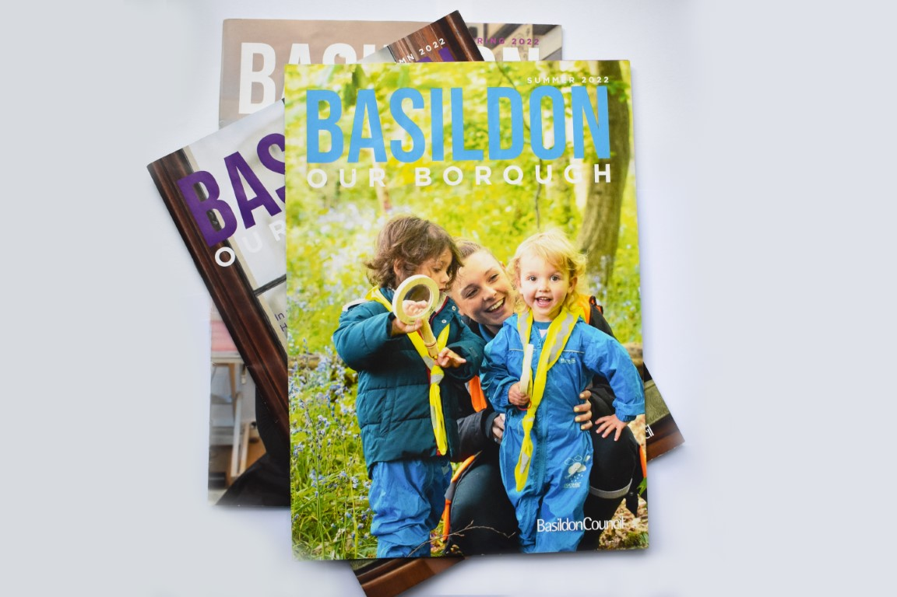
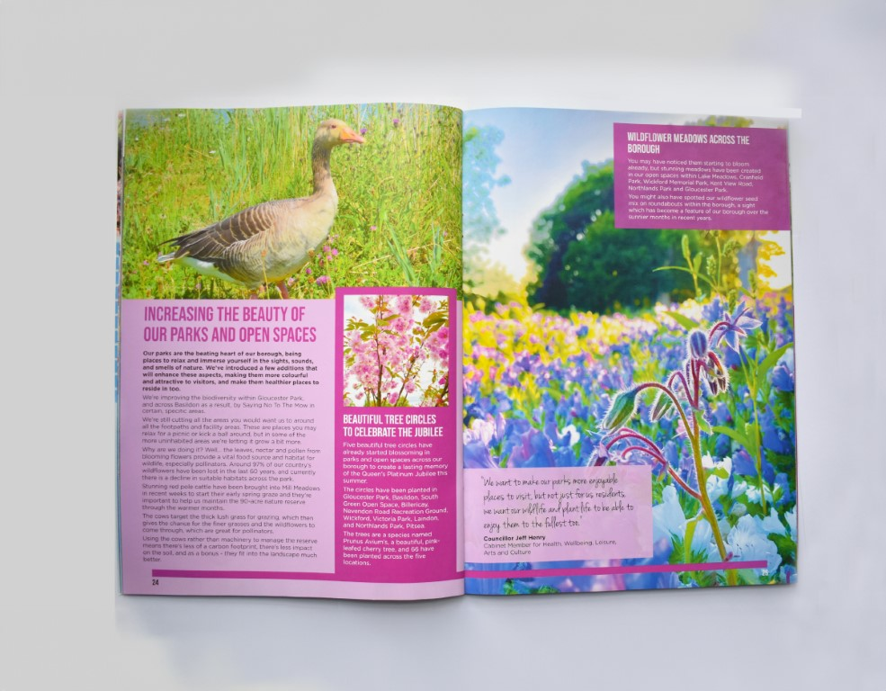
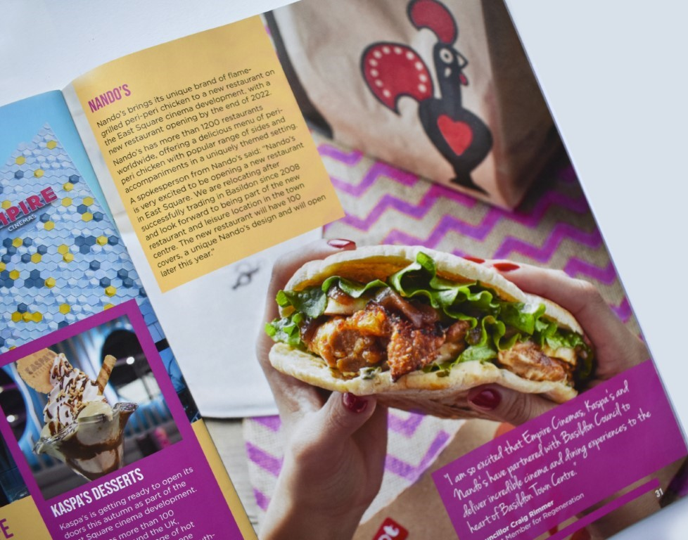
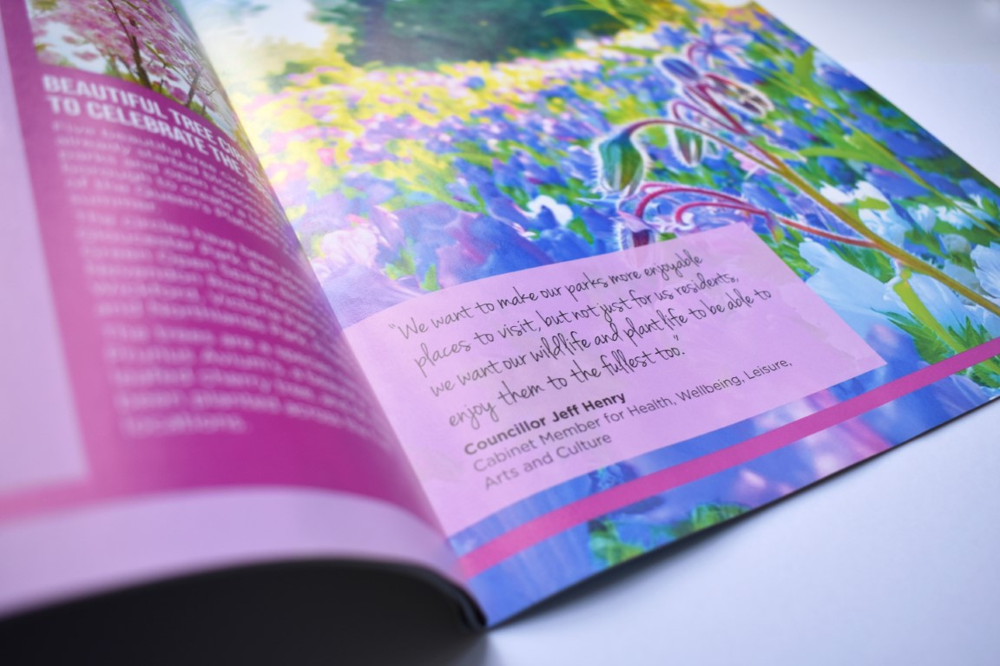
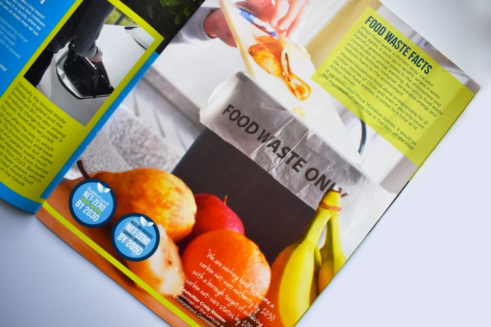
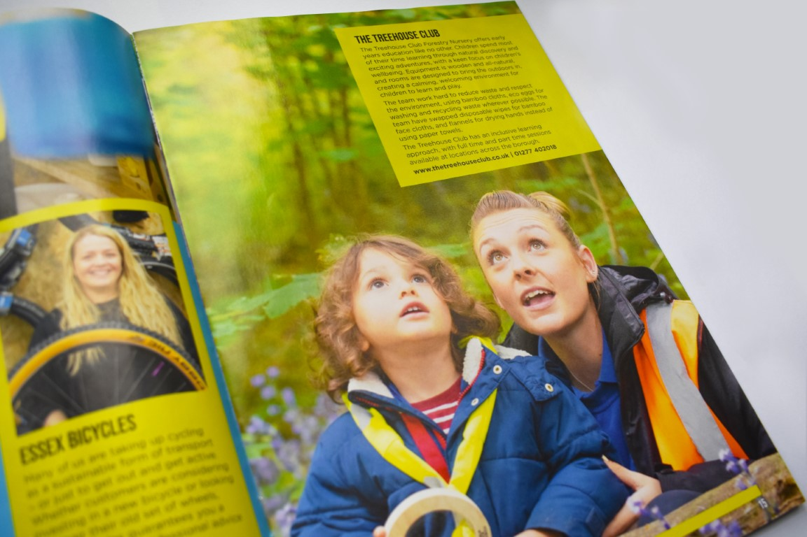

Visual storyteller & front-end designer
Bridging the gap between complex data and interactive digital experiences.
Award-winning innovation for the Daily Mail and public sector.
InDesign, Print layout, Typography
I managed the creative direction and visual design for the official Basildon Borough Council magazine. With a distribution of 80,000 copies borough-wide this publication is a primary communication tool for community initiatives and corporate campaigns. My focus was on creating a modern and accessible layout that encouraged civic engagement across a diverse demographic.
The role involved overseeing the entire editorial process from initial concept and typography to print production. By balancing vibrant photography with clear informational hierarchy I ensured that vital local information remained engaging and easy to navigate for all residents.






This project highlights my ability to manage large scale print productions while maintaining strict brand standards. The result is a professional and cohesive publication that serves as a vital link between the council and its community.